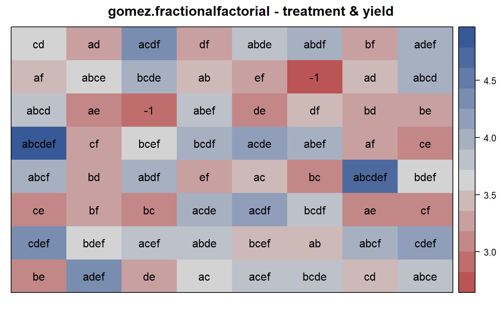
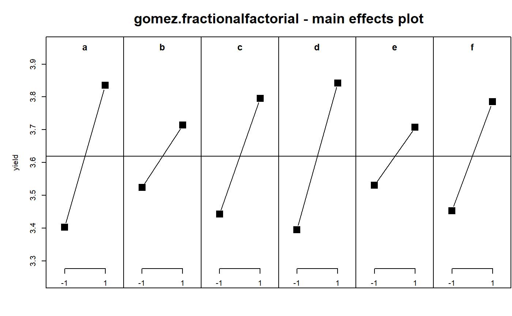

gomez.fractionalfactorial.RdRice fractional factorial experiment 1/2 2^6. Two reps with 2 blocks in each rep.
A data frame with 64 observations on the following 6 variables.
yieldgrain yield in tons/ha
repreplicate, 2 levels
blockblock within rep, 2 levels
trttreatment, levels (1) to abcdef
colcolumn position in the field
rowrow position in the field
Grain yield from a 2^6 fractional factorial experiment in blocks of 16 plots each, with two replications.
Gomez has some inconsistencies. One example:
Page 171: treatment (1) in rep 1, block 2 and rep 2, block 1.
Page 172: treatment (1) in Rep 1, block 1 and rep 2, block 1.
This data uses the layout shown on page 171.
Gomez, K.A. and Gomez, A.A.. 1984, Statistical Procedures for Agricultural Research. Wiley-Interscience. Page 171-172.
Used with permission of Kwanchai Gomez.
library(agridat) data(gomez.fractionalfactorial) dat <- gomez.fractionalfactorial # trt abcdef has the highest yield # Gomez, Figure 4.8 libs(desplot) desplot(yield~col*row, dat, # aspect unknown text=trt, shorten="none", show.key=FALSE, cex=1, main="gomez.fractionalfactorial - treatment & yield")# Split treatment into individual factors dat <- transform(dat, a = -1 + 2 * grepl('a',trt), b = -1 + 2 * grepl('b',trt), c = -1 + 2 * grepl('c',trt), d = -1 + 2 * grepl('d',trt), e = -1 + 2 * grepl('e',trt), f = -1 + 2 * grepl('f',trt)) # Gomez table 4.24, trt SS totalled together. # Why didn't Gomez nest block within rep? m0 <- lm(yield ~ rep * block + trt, dat) anova(m0)#> Analysis of Variance Table #> #> Response: yield #> Df Sum Sq Mean Sq F value Pr(>F) #> rep 1 0.0564 0.05641 6.0982 0.01944 * #> block 1 0.0039 0.00391 0.4223 0.52073 #> trt 31 12.0815 0.38973 42.1346 < 2e-16 *** #> Residuals 30 0.2775 0.00925 #> --- #> Signif. codes: 0 '***' 0.001 '**' 0.01 '*' 0.05 '.' 0.1 ' ' 1# Gomez table 4.24, trt SS split apart m1 <- lm(yield ~ rep * block + (a+b+c+d+e+f)^3, dat) anova(m1)#> Analysis of Variance Table #> #> Response: yield #> Df Sum Sq Mean Sq F value Pr(>F) #> rep 1 0.0564 0.0564 6.0982 0.0194445 * #> block 1 0.0039 0.0039 0.4223 0.5207290 #> a 1 3.0016 3.0016 324.5072 < 2.2e-16 *** #> b 1 0.5776 0.5776 62.4461 8.075e-09 *** #> c 1 2.0022 2.0022 216.4665 2.928e-15 *** #> d 1 3.2041 3.2041 346.4048 < 2.2e-16 *** #> e 1 0.5041 0.5041 54.4998 3.175e-08 *** #> f 1 1.7623 1.7623 190.5228 1.565e-14 *** #> rep:block 1 0.0039 0.0039 0.4223 0.5207290 #> a:b 1 0.0342 0.0342 3.7002 0.0639421 . #> a:c 1 0.0132 0.0132 1.4298 0.2411643 #> a:d 1 0.0016 0.0016 0.1730 0.6804364 #> a:e 1 0.0001 0.0001 0.0108 0.9178793 #> a:f 1 0.0410 0.0410 4.4333 0.0437219 * #> b:c 1 0.0352 0.0352 3.8008 0.0606285 . #> b:d 1 0.0410 0.0410 4.4333 0.0437219 * #> b:e 1 0.0138 0.0138 1.4926 0.2313218 #> b:f 1 0.0042 0.0042 0.4568 0.5043110 #> c:d 1 0.3570 0.3570 38.5970 7.707e-07 *** #> c:e 1 0.0116 0.0116 1.2494 0.2725423 #> c:f 1 0.0030 0.0030 0.3270 0.5716668 #> d:e 1 0.1388 0.1388 15.0014 0.0005404 *** #> d:f 1 0.0400 0.0400 4.3245 0.0462114 * #> e:f 1 0.0529 0.0529 5.7192 0.0232535 * #> a:b:d 1 0.0046 0.0046 0.4926 0.4881840 #> a:b:e 1 0.0039 0.0039 0.4223 0.5207290 #> a:b:f 1 0.0240 0.0240 2.5974 0.1175108 #> a:c:d 1 0.0915 0.0915 9.8930 0.0037271 ** #> a:c:e 1 0.0176 0.0176 1.8981 0.1784872 #> a:c:f 1 0.0009 0.0009 0.0973 0.7572498 #> a:d:e 1 0.0495 0.0495 5.3523 0.0277314 * #> a:d:f 1 0.0462 0.0462 4.9975 0.0329765 * #> a:e:f 1 0.0000 0.0000 0.0027 0.9588823 #> Residuals 30 0.2775 0.0092 #> --- #> Signif. codes: 0 '***' 0.001 '**' 0.01 '*' 0.05 '.' 0.1 ' ' 1#> #> rep:block = a:b:c = d:e:f #> a:b:d = c:e:f #> a:b:e = c:d:f #> a:b:f = c:d:e #> a:c:d = b:e:f #> a:c:e = b:d:f #> a:c:f = b:d:e #> a:d:e = b:c:f #> a:d:f = b:c:e #> a:e:f = b:c:dMEPlot(m1, select=3:8, main="gomez.fractionalfactorial - main effects plot")